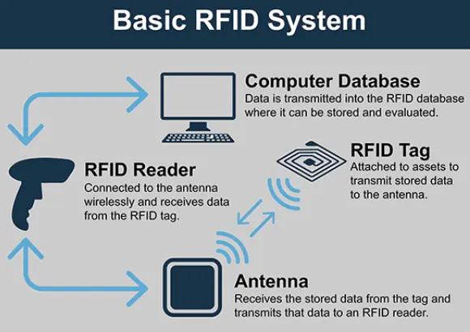

TRACKING
As part of our ongoing digitisation efforts, we will be implementing a combined RFID (Radio Frequency Identification) and barcode system to enhance how we track, manage, and conserve our collection. (N. A. Çayirezmez, H. M. Aygün and L. Boz, 2013)
Critically, this system meets business requirements 2 and 6 by enabling digital tracking while ensuring the safety, security, and quality of the collection. (Duffy, C., 2013)
Each item in the collection will be fitted with two things an RFID tag and a barcode label. The RFID tag will allow us to track the object automatically, when the RFID tag comes within range of an RFID reader the eader sends out a radio signal and the tag picks up this signal and sends its ID back to the reader which is captured and sent straight to our database. (Amsler. S, 2021)
RFID System Diagram (Ruddersoft, 2025)
How RFID Works (Akgul, 2015)
This means we get real time updates on where our objects are without having to manually input anything. So, this not only improves tracking and workflow but also ensures items remain in appropriate environmental conditions.
This is evident in a study by Stephane Rioual where they developed RFID sensors in the project SensMat and found that the RFID sensor works well for keeping track of pollution levels in places like storage rooms (Rioual, 2021). For example, if an object is moved from a climate-controlled area to a standard space, RFID readers will detect this and alert staff.
We'll use two RFID reader types: Fixed readers in key areas like doorways, storage, labs, and exhibition spaces will automatically log movements and handheld readers will allow staff to locate, audit, or check inventory directly. Barcodes will serve as a reliable manual backup. Staff can scan them to access object data, verify location, and log updates and eco-friendly inks will be used to reduce our carbon footprint.
Labels (Rowe, 2016)
RFID tags can be used as follows: For Pinned Objects and Small Dry Objects, tag trays, containers, or the items themselves. Large/Heavy Dry Objects need rugged tags. Liquid Preserved Objects require chemical-resistant tags on jars. Frozen Tissue Samples need cryogenic tags for boxes or bottles. (Concept Group LLC, 2021) Paper-Based Objects are tagged via folders or boxes. Assemblages can be tracked with a single tag per set. Audio-Visual Objects should have tags on sleeves, boxes, or albums.
Frozen Samples (Concept Group LLC, 2021)
Large/Heavy Dry Objects (French, 2025)
By combining RFID automation with barcode reliability, we're building a robust system that supports both the digitisation and long-term preservation of the collection.